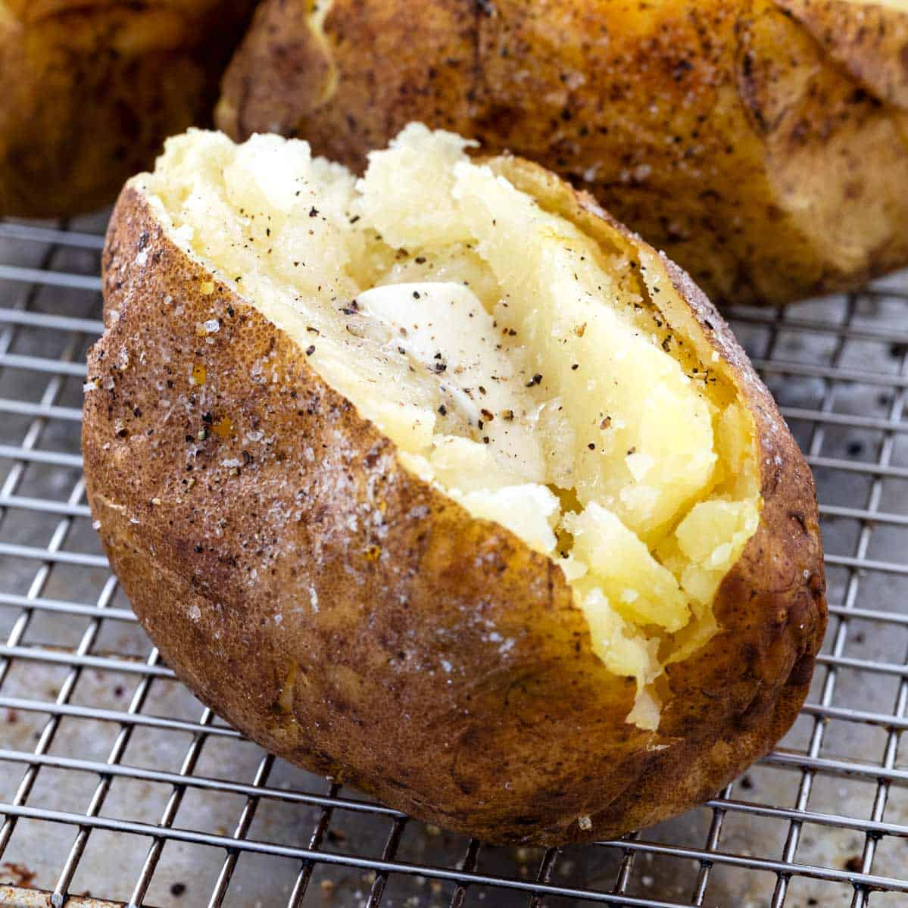

Baked Potato

Description
This recipe is a quick and easy way to make "baked potatoes." It is simpler and quicker than using the oven.
Ingredients
- Potatoes
- Olive Oil
- Desired Toppings
- Get similarly sized potatoes ready
- Put in instantpot with water
- Pressure cook on high for the appropriate time
- When done, let steam release
- brush with olive oil and put desired toppings on